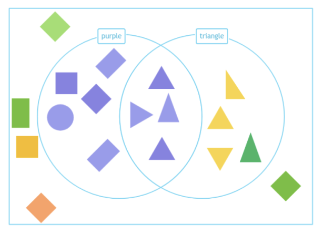

Sorting Numbers or Objects
Sorting means putting things into groups based on what they are like, such as color, shape, or size.
Carroll Diagram
A Carroll diagram is a chart with boxes to help you sort things. You use labels to decide where each object or number goes.
How to make a Carroll diagram:
Let’s sort toys by 'red' and 'not red.' Red toys go in one box, and toys that are not red go in another.
| Red |
Not Red |
| Ball | Truck |
| Doll | Block |
Venn Diagram
A Venn diagram uses two overlapping circles to sort things. If something belongs to both groups, it goes in the middle where the circles overlap.
How to make a Venn diagram:
Let’s sort shapes by purple and triangle. If a fruit is purple and a triangle, it goes in the middle.

Using One or Two Criteria
One criterion (simple sorting):
If we’re sorting by just one thing, like 'round' or 'red,' put the objects in the correct group.
Two criteria (more detailed sorting):
If we’re sorting by two things, like 'round' and 'not red,' check both rules and use a Carroll or Venn diagram to place each object.